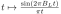
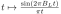
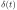
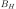
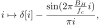
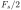

Next: Blog posts 2022 Up: Blog posts 2021 Previous: August – Radio waves Contents
The two-dimensional Poisson point process appears everywhere in nature: locations of cell phones in a city, raindrops in a puddle, locations of a bunch of grains of sand thrown in the ground, etc.
As a fun example, let us study how a bunch of grains of sand arranged into a sand castle will spread by wind and water around the sunny beach and, finally, a realization of the Poisson point process.
For simplicity, the sand castle is so tiny that it can be considered entirely located at the origin
of the two-dimensional beach. Let's assume that the amount of grains in the pile is Poisson distributed: In our model, the sand castle is a Poisson distributed random amount of grains of sand piled above each other in the origin. Suppose that wind moves individual sand grains from the pile after a while, directing them with a uniformly distributed angle and to a random, normal distributed distance between
 . In other words, the probability that a sand grain is moved from the origo to a location  inside a circle
. In other words, the probability that a sand grain is moved from the origo to a location  inside a circle
 is
is

After a random translation of all points, the Laplace functional of the distances of the points is
|  |  | |
![$\displaystyle = \mathbb{E}_n \left[ (2 \pi)^{-n/2} \int_0^{\infty} \dots \int_0...
...left[ -f(y_i) \right] \frac{2}{\sqrt{2 \pi}}e^{-y_i^2} dy_1 \dots d y_n \right]$](img21.svg) |
||
|  | ||
![$\displaystyle = \mathbb{E}_n \exp \left[ \sum_{i= 0}^n \log \left( \int_{0}^{\infty} \exp \left[ -f(y) \right] \frac{2e^{-y^2}}{\sqrt{2 \pi}} dy \right) \right]$](img23.svg) |
Evaluating the Poisson Laplace functional
 of the sand pile with
of the sand pile with
![$g = - \log \left( \int_{0}^{\infty} \exp \left[ -f(y) \right] \frac{e^{-y^2}}{\sqrt{2 \pi}} dy \right) $](img25.svg) we get
we get
 |
![$\displaystyle = \exp \left[ -\int_{\mathbb{R}^2} 1 - e^{\log \left( \int_{0}^{\...
...t[ -f(y) \right] \frac{2e^{-y^2}}{\sqrt{2 \pi}} dy \right) }\Lambda(dx) \right]$](img27.svg) |
|
![$\displaystyle = \exp \left[-\int_{\mathbb{R}^2} \left(1 - \int_{0}^{\infty} \exp [-f(y)] \frac{2e^{-y^2}}{\sqrt{2 \pi}} dy \right) \Lambda(dx) \right]$](img28.svg) |
||
![$\displaystyle = \exp \left[-\int_{\mathbb{R}^2}\int_{0}^{\infty} \left(1 - \exp [-f(y)] \right) \frac{2e^{-y^2}}{\sqrt{2 \pi}}dy \Lambda(dx) \right]$](img29.svg) |
||
![$\displaystyle = \exp \left[-\int_{0}^{\infty} \left(1 - \exp [-f(y)] \right) \sqrt{\frac{2}{\pi}}e^{-y^2} N dy \right], (1)$](img30.svg) |
where  denotes the expected number of points in the sand pile (Campbell's theorem). But the formula  is the Laplace functional of the Poisson p.p. on
with a density parameter
is the Laplace functional of the Poisson p.p. on
with a density parameter
 , and as the direction of the translation of a sand grain was uniformly distributed, we can conclude that the sand grains are Poisson distributed according to the Poisson p.p. with the two-dimensional multivariate Gaussian distribution as the density: an example of the universality of the Poisson point process in the nature.
, and as the direction of the translation of a sand grain was uniformly distributed, we can conclude that the sand grains are Poisson distributed according to the Poisson p.p. with the two-dimensional multivariate Gaussian distribution as the density: an example of the universality of the Poisson point process in the nature.
.
References:

![\includegraphics[width=\linewidth]{spread.eps}](img32.svg)